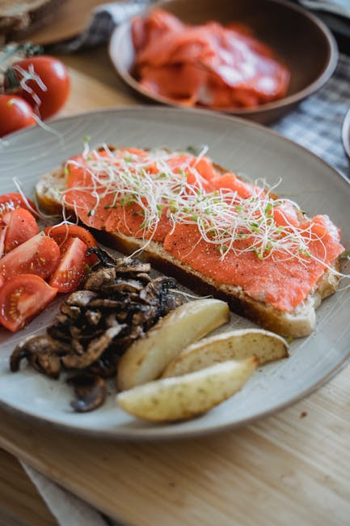

← Back to all nutrition guides | About Our Content
Reviewed by The Today's Food Coach Team
Our team of nutrition researchers and AI specialists ensures every guide is accurate and practical.
A realistic guide for busy professionals over 40.
Gaining weight after 50 is a common concern for many men, often linked to a variety of lifestyle changes and biological shifts. As we age, our metabolism slows, hormonal levels fluctuate, and muscle mass decreases, making it easier to gain weight. Additionally, many men find they are less physically active as they juggle work, family, and other obligations. This combination of factors can lead to unwanted weight gain, especially around the belly area. The good news is that you can still make effective dietary changes without the need for calorie counting. Understanding the reasons behind weight gain at this age can guide you towards healthier eating habits and lifestyle choices that support weight loss and overall wellness.
Want a personalized version of this strategy?
Try the AI Food Coach
Understanding why you're gaining weight after 50 is crucial for addressing the issue. First, weight gain can increase the risk of chronic diseases like diabetes, heart disease, and certain types of cancers. These health issues can significantly affect your quality of life as you age. Second, extra weight can lead to decreased energy levels, making daily activities feel more daunting and less enjoyable. This can result in a downward spiral, where lower activity leads to more weight gain, and so on. Third, emotional well-being is often tied to body image; gaining weight can impact self-esteem and confidence, especially if it leads to social withdrawal. Lastly, addressing weight gain can promote a healthier lifestyle overall, helping you feel your best as you enter your latter years. By taking a proactive approach, you can improve not only your physical health but also your mental and emotional well-being.
These strategies work best when personalized to your lifestyle and goals.
Most people know what foods are healthy. The hard part is knowing what to eat today. Today's Food Coach creates a simple, personalized daily plan based on your goals and lifestyle.
Start Your PlanStart your morning with a hearty breakfast that includes oatmeal topped with fresh berries and a handful of nuts. For lunch, enjoy a colorful salad with mixed greens, grilled chicken, and a vinaigrette. For dinner, opt for baked fish with roasted vegetables and quinoa. Snack on fresh fruit or yogurt throughout the day to stay satisfied without counting calories.
After 50, hormonal changes, particularly a decline in testosterone, can lead to muscle loss, making it easier to gain weight.
Yes, by focusing on whole foods and mindful eating, you can lose weight effectively without traditional calorie counting.
Setting small, achievable goals and finding support from friends or family can help keep you motivated and accountable.
Generate a personalized meal strategy based on your lifestyle and goals.
Try the AI Food Coach